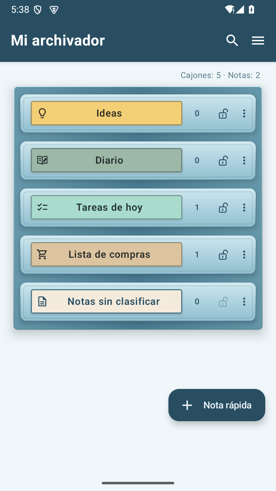
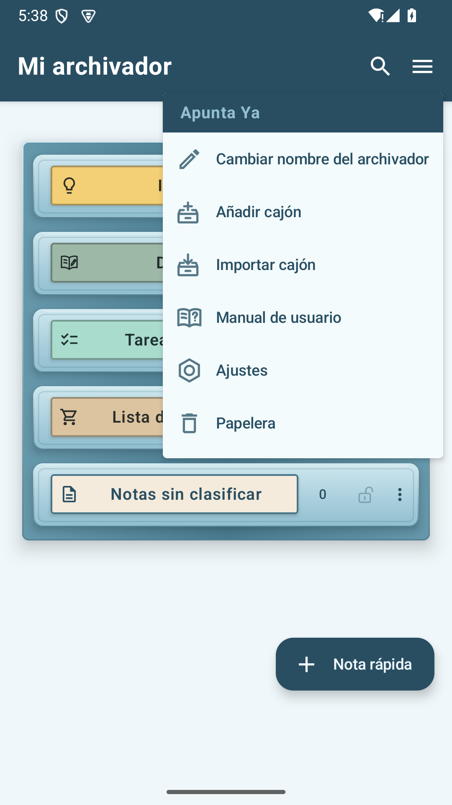
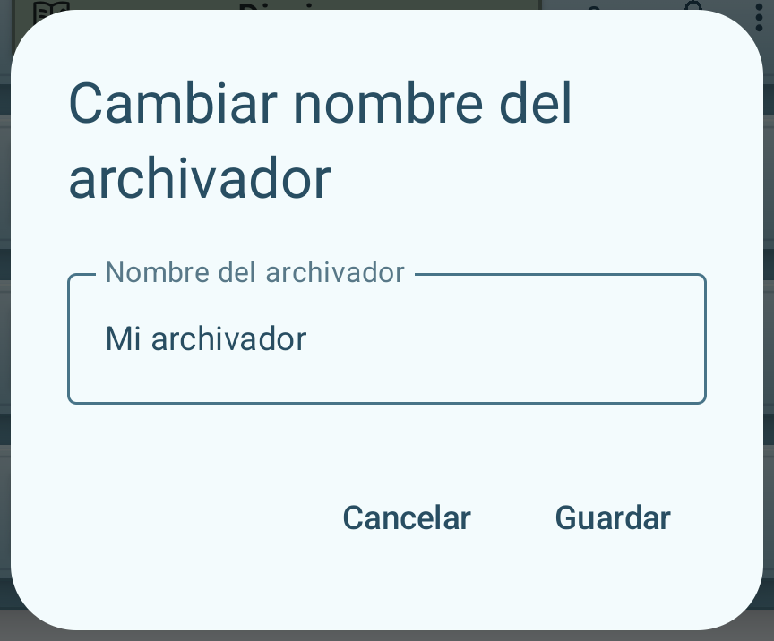
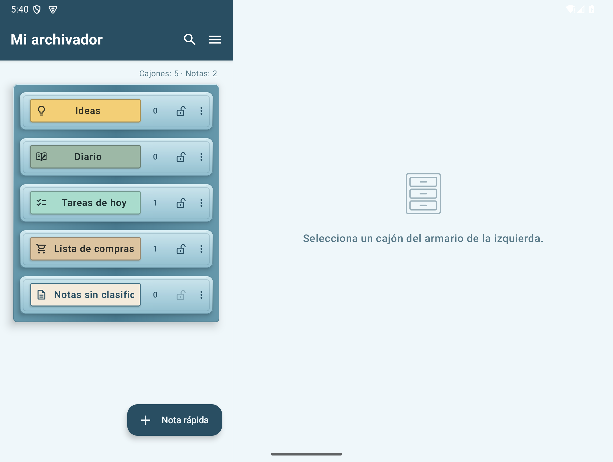
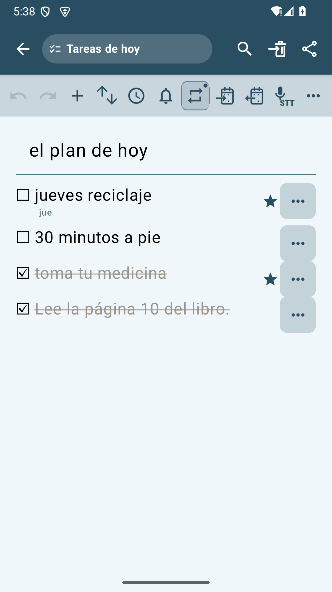
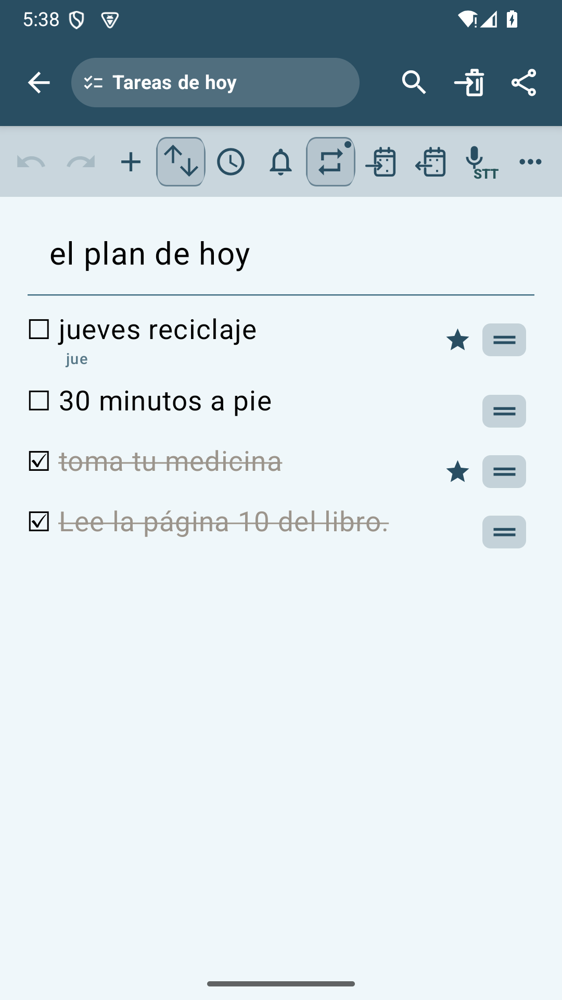
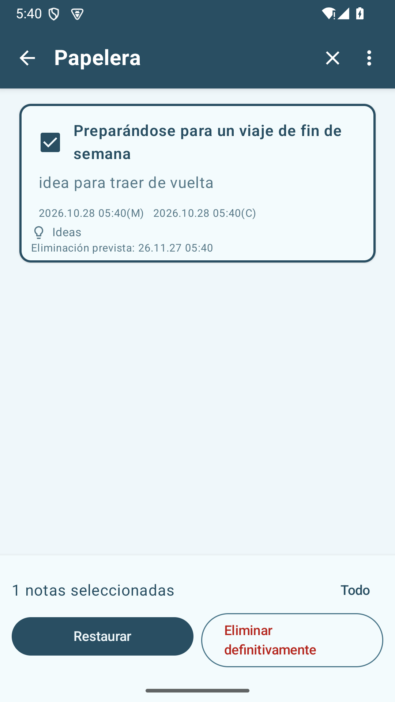
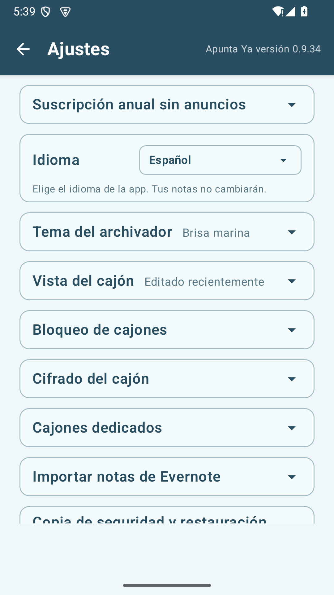

Apunta Ya — Manual de usuario
Versión 0.9.34
Escriba sus pensamientos como notas, sus planes para el día como tareas pendientes y sus compras como una lista. Puedes revisar este manual en cualquier momento accediendo a “Manual de usuario” en el menú de tres líneas (☰) de la cómoda.
1. Primer uso y configuración de pantalla
Apunta Ya es una aplicación que recopila notas en cajones por tema. Cuando tocas el cajón, se abre una lista de notas y cuando tocas una nota, se abre una pantalla para escribir el contenido.


La cerradura indica el estado de bloqueo del cajón y el escudo rojo indica si el cifrado está vigente. Los cajones cerrados se indican con un candado lleno del color del tema, y los cajones abiertos se indican con una cerradura abierta con solo un contorno.
Ver las herramientas del mueble
A la derecha del nombre de la cómoda, se muestran Buscar todo y el menú de tres líneas de la cómoda (☰). En la parte superior del menú, puede ver el nombre de la aplicación de color temático y, debajo, puede ver Editar nombre del cajón, Agregar cajón, Importar cajón, Manual del usuario, Configuración y Papelera de reciclaje en ese orden. El manual del usuario se encuentra justo encima de la configuración, que se indica con un icono de tuerca hexagonal.
La pantalla horizontal del teléfono y la pantalla plegada casi cuadrada muestran los cajones a la izquierda y el contenido a la derecha en 45:55. La pantalla ancha plegable tipo tableta mantiene la relación de aspecto existente de 38:62. Los anuncios se adjuntan en la parte inferior del área de contenido derecha y no se muestran durante la edición.
Cajones generales y específicos
Ideas, Notas sin clasificar y los cajones añadidos con la herramienta Nuevo cajón son cajones generales para notas normales. Diario, Tareas de hoy y Lista de compras son cajones específicos diseñados para sus respectivas funciones.
Las notas normales se pueden mover a otro cajón general. Las notas de los cajones específicos no se pueden mover a otros cajones.
Crea tu primera nota
Para escribir una nota directamente desde la pantalla del mueble, toca ＋ Nota rápida debajo del mueble. La nota empieza en notas sin clasificar; puedes elegir el cajón de destino tocando el nombre del cajón en el encabezado de la nota.
Para crear una nota en un cajón concreto, abre un cajón existente y toca ＋ Nueva nota. Si necesitas un cajón nuevo, sigue estos pasos.
- Expanda las herramientas con la flecha (‹) a la izquierda del cajón y presione
 Nuevo cajón.
Nuevo cajón. - Ingrese el nombre del cajón y presione Crear.
- Abra el cajón que creó y presione ＋ Nueva nota.
- Escribe el título y el cuerpo. Su entrada se guardará automáticamente. Puede utilizar Atrás para volver a la lista y volver a abrir sus notas.

¿Qué cajón debo usar?
| Cajón | usar |
|---|---|
| cajón normal | Recopilamos artículos, fotografías, fotografías y archivos por temas, como ideas, viajes y trabajo. |
| Diario | Mantenga notas por fecha y léalas nuevamente en un calendario o lista de registros. |
| Tareas de hoy | Administre las tareas pendientes por fecha, hora, notificaciones, cronograma de repetición y estado de finalización. |
| Lista de compras | Administre artículos, cantidad y estado de compra para cada artículo comestible. |
| Notas sin clasificar | Reúna todas las notas para las que aún no haya decidido colocar un cajón. |
Cambiar el nombre de la cómoda
Toque el menú de la cómoda (☰) → Editar nombre de la cómoda. Cambiar el nombre y guardar.

Pantalla ancha y pantalla completa
En una tableta o plegable desplegada, cuando seleccionas un cajón del cajón izquierdo, aparecerá una lista de notas a la derecha. Cuando abres una nota, puedes ver la lista y la pantalla de edición una al lado de la otra. Utilice el botón de pantalla completa en el encabezado para expandir el área de edición y utilice el botón de alejar para volver a la pantalla de dos espacios.

2. Administrar cajones
Al crear un cajón, puedes elegir su nombre, el color de la etiqueta y el icono. También puedes modificar los cajones existentes en sus ajustes.
Cambiar los ajustes del cajón
- En la pantalla del mueble, toca Más (…) a la derecha del cajón que quieras modificar.
- Selecciona Configuración del cajón.
- Cambia el nombre del cajón, elige un círculo de color en la pestaña Color de etiqueta y un icono en la pestaña Icono del cajón.
- Revisa la vista previa de arriba y toca Guardar.
La etiqueta muestra el icono elegido junto al nombre del cajón. Los nombres largos se desplazan dentro del área del nombre.


El menú Más (…) de Notas sin clasificar abre directamente los ajustes del cajón. Para saber cómo cifrar un cajón, consulta la guía de cifrado de cajones.
Cambiar el orden de los cajones
Mantenga presionado el cajón y arrástrelo hacia arriba o hacia abajo hasta la ubicación deseada. La ubicación de las notas no clasificadas es fija.
Eliminar un cajón
Seleccione Más → Eliminar cajón y consulte las instrucciones. Las notas y los archivos adjuntos de ese cajón se mueven a la Papelera de reciclaje. Los cajones cifrados se eliminan después de la autenticación y mantienen la protección de cifrado incluso en la Papelera de reciclaje.
Recrea un cajón dedicado
Diario, Tareas pendientes y Lista de compras mantienen sus funciones exclusivas incluso si cambias el nombre o el ícono. Los cajones dedicados eliminados se pueden crear en Configuración → Cajón dedicado. Las notas antiguas no volverán automáticamente al cajón dedicado recién creado.
↑ Ir al índice3. Escribe y edita notas.
Nuevas notas y guardado automático
＋ Nueva nota en cajón crea una nota en el cajón actual. ＋ La nota rápida comienza a partir de una nota no clasificada y, antes de guardarla por primera vez, puede seleccionar el cajón para guardar presionando el nombre del cajón en el encabezado y confirmando con el botón de selección. Cuando selecciona la lista de tareas pendientes o de compras de hoy, cambia a un formato de lista que coincide con ese cajón.
Cualquier cambio que ingrese se guardará automáticamente sin un botón para guardar. Puedes reabrir lo que escribiste volviendo a la lista. Cuando cierra una nota nueva o existente, espera a que se guarde y ordene y luego se mueve a una ubicación visible. Si ordena por orden de edición, la nota que acaba de editar aparecerá en la parte superior de la lista. Simplemente cierre la nueva nota sin ingresar nada. Para deshacerse de la nota Eliminar el título o el cuerpo de una nota ya guardada es editar el contenido., muévala a la papelera. Si aparece un mensaje de error al guardar, verifique la información e inténtelo nuevamente.
Ver y ordenar por cajón
Seleccione Ver más (⋮) → Vista de cajón en el encabezado de la lista de notas del cajón. En Más, también hay configuraciones de cajón y exportación de cajón, y se agrega la búsqueda por fecha al diario. La exportación de un cajón apunta a todas las notas y archivos adjuntos en ese cajón, independientemente de los resultados de la búsqueda o el estado de la selección. Los menús de gestión existentes para cada cajón de la cómoda siguen disponibles. Seleccione los criterios de clasificación de notas, muestre siempre las notas importantes primero y muestre solo los títulos apropiados para este cajón. Los cambios realizados aquí no afectarán a otros cajones ni a la configuración general.
Los elementos no especificados por separado funcionan como Usar los valores predeterminados de los ajustes. Incluso si cambió los elementos usted mismo, puede volver a seguir toda la configuración haciendo clic en el mismo texto. El valor predeterminado se establece en Configuración → Vista del cajón. Si desactiva Mostrar solo el título, aparecerá como una tarjeta tradicional con el texto, la vista previa adjunta y la fecha. Sólo cambia el método de visualización; el contenido de la nota sigue siendo el mismo.
Marcar notas importantes
Si presiona la estrella (☆) en la nota, cambiará a una estrella rellena (★). Presione nuevamente para apagarlo. Puede configurar notas importantes para que se muestren primero en Configuración → Vista del cajón, o seleccionarlas por separado en la vista del cajón para cada cajón. El título de la fecha de las notas de tareas pendientes de hoy no muestra una estrella de nota. Una estrella después de un elemento de la lista indica la importancia de esa tarea o elemento.
Mover a otro cajón
- Abra una nota normal y presione el ícono de mover al lado del nombre del cajón en el encabezado.
- Seleccione el cajón normal que desea mover y presione el botón de mover. La selección por sí sola no se mueve y la cancelación mantiene el cajón actual. Confirme cuando se le solicite bloquear o eliminar la protección.
Las notas de las tareas pendientes, la lista de compras y el diario de hoy no se pueden mover directamente a otro cajón y el icono de movimiento no se muestra. Para obtener información sobre cómo mover varias notas a la vez, consulte Seleccionar varias notas.
Guía de iconos de la barra de herramientas de edición de notas
A continuación se muestra la barra de herramientas para notas generales. Los iconos de luz no están disponibles actualmente. Para el formato de fuente, primero seleccione el texto que desea cambiar y luego aplíquelo. Las herramientas dedicadas para la lista de tareas pendientes/compras de hoy se explican en Capítulo 6 y Capítulo 8.
Barra de herramientas superior: Deshacer, Adjuntar, Voz
| icono | nombre | Que haces |
|---|---|---|
 | Deshacer | Restaura el texto, la ubicación de los archivos adjuntos y el movimiento de los archivos adjuntos a otras notas que se cambiaron durante la edición actual a su estado anterior. Si no hay nada que revertir, se mostrará en color claro. |
 | Rehacer | Vuelve a aplicar los cambios corporales revertidos. Si no hay nada que volver a aplicar, se mostrará en color claro. |
 | cámara | Tome una nueva foto y adjúntela a la nota. |
 | Fotos | Seleccione y adjunte una foto desde su teléfono. |
 | Dibujo | Haz un dibujo en un lienzo blanco y ponlo en una nota. |
 | Pegar | Inserte fotografías, imágenes, grabaciones y archivos generales cortados de la misma nota en la posición actual del cursor. Solo se activa cuando hay un archivo adjunto cortado y se desactivará nuevamente cuando se pegue. |
 | Adjuntar archivo | Seleccione un archivo y adjúntelo a la nota. Si toca el archivo adjunto, puede abrirlo con una aplicación compatible. |
 | entrada de voz | Escribe lo que dijiste en letras. Se coloca en el título o texto en la posición donde comenzó la entrada de voz y reemplaza el carácter seleccionado, si lo hay. |
 | Registro adjunto | Graba tu voz o sonido y adjúntalo como un archivo de audio. A diferencia de STT, no se convierte a letras. |
Barra de herramientas inferior: formato de fuente, lista, fecha
| icono | nombre | Que haces |
|---|---|---|
 | Atrevido | Muestra el texto seleccionado en negrita. Presione nuevamente para desactivar la visualización en negrita. |
 | consejo | Inclina el texto seleccionado. Presione nuevamente para apagarlo. |
 | subrayar | Subraya las letras seleccionadas. Presione nuevamente para apagarlo. |
 | Resaltar | Agrega un fondo amarillo detrás del texto seleccionado para enfatizarlo. |
 | Tamaño de fuente | Abra el menú Tamaño de fuente y redúzcalo a A− o auméntelo a A+. Primero selecciona el personaje que deseas cambiar. |
 | color de fuente | Seleccione el color de fuente entre negro, rojo o azul. |
 | Interlineado | Aumentar o disminuir el interlineado en el cuerpo del texto. Esto es diferente de la función para cambiar el tamaño de fuente. |
 | Lista de casillas de verificación | Convierte la línea actual en una lista de verificación o le quita formato a la lista de verificación. Puede marcar la finalización haciendo clic en la casilla de verificación. |
 | lista de viñetas | Reemplaza la línea actual con una lista que comienza con un punto. |
 | Lista numerada | Reemplaza la línea actual con una lista de números. Los números para el siguiente elemento continúan automáticamente. |
 | marca de tiempo | Inserta la fecha y hora actuales en la posición del cursor en el texto. |
Cuando coloca el cursor sobre el título, la barra de herramientas de formato de texto se oculta y reaparece cuando hace clic en el texto. Si su pantalla es estrecha, puede deslizar la barra de herramientas hacia la izquierda o hacia la derecha para ver otras herramientas. En pantalla completa, puede deslizar la barra de herramientas hacia arriba o hacia abajo.
Solo se aplica a una línea un formato entre casilla de verificación, viñeta o lista de números. El formato cambia cuando presiona un botón de lista diferente. Cuando presiona Enter en una lista de números, el siguiente número continúa y cuando presiona Enter en un elemento vacío, la lista finaliza. Las restricciones sobre el título, el cuerpo y los archivos adjuntos se pueden consultar en Limitaciones de capacidad y longitud.
↑ Ir al índice4. Adjunte y comparta fotografías, imágenes y archivos.
Insertar fotos, grabaciones y archivos
En la barra de herramientas superior de una nota general, seleccione Cámara, Foto, Pintura, Adjuntar archivo, Adjuntar grabación. Permita los permisos necesarios del dispositivo y tome una fotografía o seleccione un archivo. Consulte Información de la barra de herramientas de edición de notas para conocer las funciones de cada herramienta y las diferencias en el adjunto de entrada/grabación de voz.
Cambiar la ubicación del archivo adjunto dentro de la misma nota
Cambie la posición haciendo clic en Más (…) en la esquina superior derecha de la foto → Mover hacia arriba o bajar. También puedes mantener presionada la foto y arrastrarla hacia arriba o hacia abajo. La línea que se muestra es donde la colocarás y se desplazará automáticamente cuando la arrastres hasta el borde de la pantalla. Mientras editas, puedes revertir el movimiento con Deshacer.
Fotos, imágenes, grabaciones, archivos generales… Al pulsar Cortar en el menú se saca de la nota y se coloca en el buffer de la aplicación. Permanecerá incluso si cierras la nota o sales de la aplicación. Haga clic en la ubicación donde desea pegar y haga clic en Pegar en la barra de herramientas superior. Si el guardado es exitoso, el búfer se vacía. Si trunca otro archivo adjunto, se elimina permanentemente el archivo adjunto A existente y confirma que desea truncar B. Si cancela, A permanecerá en el búfer y B permanecerá en la nota original. Si el reemplazo falla, conserve A. El corte y pegado normal se puede deshacer y rehacer durante la edición actual. El reemplazo del búfer, que elimina permanentemente los archivos adjuntos existentes, es irreversible y restablece el historial de edición.
Solo un archivo adjunto puede quedar pendiente de pegar. Mientras tanto, Cortar aparece desactivado en los menús de todos los demás archivos adjuntos. Después de pegar, Pegar se desactiva y puedes cortar otro archivo adjunto. Se cambia la posición del archivo existente sin crear una copia. Puedes deshacer y rehacer el corte y el pegado. Si cierras la nota antes de pegar, se elimina el archivo adjunto cortado.
Mover el archivo adjunto a otra nota
- Fotos, imágenes, grabaciones y archivos generales para mover... En el menú, toque Mover a otra nota.
- Seleccione el cajón normal que contiene la nota que desea recibir. Desbloquee o descifre si es necesario.
- Seleccione la nota que desea recibir y presione Ir. También puedes encontrar el título de una nota buscando.
Mueve un archivo adjunto a la vez. Se retira de la nota original y se añade al final de la nota de destino. Los cajones especiales, como Diario, Tareas de hoy, Lista de compras y Copia de seguridad, no pueden ser el origen ni el destino. Al pasar de un cajón cifrado a uno sin cifrar, revisa el aviso sobre el cambio de protección. Si cancelas el traslado o la autenticación, el archivo adjunto permanece en la nota original.
Mientras la nota original siga abierta, usa Deshacer en la barra superior para devolver el archivo adjunto a su posición original y Rehacer para trasladarlo otra vez. Las ediciones anteriores se conservan en el historial. Puede que se solicite de nuevo el desbloqueo o la autenticación de cifrado. Si cancelas la autenticación o falla la operación, ninguna de las notas cambia y puedes volver a intentarlo después. Al cerrar la nota se borra el historial de deshacer de esa sesión de edición.
Ver foto más grande
Haga clic en una foto o imagen para abrirla más grande. Utilice dos dedos para acercar o alejar, o toque dos veces para acercar. Para cambiar de dirección o dibujar, toque Modificar para abrir Paint. No cambiará la galería original en su teléfono.
Dibujar y marcar fotografías
- Un dibujo en blanco comienza con Paint en la barra de herramientas superior. Para mostrarlo sobre una foto, ábrelo más grande y toca Editar.
- La barra de herramientas incluye Deshacer, Rehacer, Pluma, Selección de color, Borrador, Grosor, Girar a la izquierda y Girar a la derecha en ese orden. Si su pantalla es estrecha, puede deslizar la barra de herramientas hacia la izquierda o hacia la derecha para ver otras herramientas.
- Seleccione un color básico de la selección de colores o ajuste el tono, la saturación y el brillo. Cuando presionas el botón de grosor, puedes elegir entre cinco tamaños indicados por líneas y círculos. El lápiz y el borrador muestran un borde alrededor de la herramienta seleccionada.
- El borrador solo borra las líneas dibujadas en esta edición, conservando la foto de abajo. Los trazos antiguos que se agregaron a una imagen ya guardada no se pueden borrar por separado.
- Gire la imagen y alinee 90 grados con el botón de rotación al final de la barra de herramientas. Puede restaurar líneas y rotaciones con Deshacer/Rehacer.
- La imagen en blanco se agregará a su nota cuando presione Listo. Si editó una foto existente, toque Guardar y elija Guardar como copia o Reemplazar el original. Puede elegir si sus cambios se descartarán cuando cancele o cierre.
Guardar una copia añade la imagen editada justo después de la original y conserva la original. Cuando hay 30 fotos o 50 adjuntos en total, se desactiva guardar una copia y se muestra el motivo. Todavía puedes reemplazar una imagen existente.
Después de la confirmación, Reemplazar original reemplaza el archivo adjunto existente en la nota con la imagen modificada. No puede volver a la imagen antes de sobrescribirla, así que seleccione Guardar como copia si desea conservar el original. Los trazos se fusionan en la imagen guardada. La resolución puede disminuir durante el proceso de edición/rotación y guardado, así que guarde el original de alta resolución por separado.
También puedes ver el manual de solo lectura y fotografías de diarios anteriores en formato más grande. La pantalla ampliada en estado de solo lectura solo muestra un botón de cerrar.
Compartir como PDF
- Abra una nota y presione el botón Compartir en el encabezado.
- En la ventana para compartir de Android, seleccione la aplicación y el destinatario deseados, como KakaoTalk.
Envíe el título, el cuerpo, el formato del texto, las fotografías y las imágenes en formato PDF. Los destinatarios pueden leerlo sin Apunta Ya. Los archivos grabados y generales solo muestran el nombre y el tipo, y el archivo original no está incluido en el PDF. Si cierra la ventana para compartir, no se enviará. El PDF enviado es una copia en el momento de compartirlo y no refleja ninguna edición posterior de la nota.
↑ Ir al índice5. Lleva un diario
Continuar el récord de hoy
Cuando abra el cajón del diario, verá una lista de los diarios existentes. Si no tiene un diario para hoy, escríbalo como ＋ Diario de hoy a continuación y, si ya existe, ábralo como Continuación del diario de hoy. La fecha se muestra automáticamente y se puede escribir un título breve por separado. La primera vez que ingresa información, se guarda y no se crean notas en blanco para los días en los que no registró nada.
Leer y editar registros pasados
Toque el diario en la lista o seleccione el día con el registro de Más (⋮) en la parte superior del cajón del diario → Buscar por fecha. En la vista del cajón de Más, configure el método de clasificación y visualización. No hay ningún ícono de calendario/lista en la pantalla de edición del diario y puede regresar a la lista presionando Atrás. Los registros anteriores son de solo lectura, pero puedes ampliar las fotos, marcarlas como importantes, compartirlas y moverlas a la papelera.
Cuando presione Desbloquear Editar, lo guiaremos a través de lo que significa conservar los registros de ese día. No lo mantiene como de solo lectura y Editar permite editar el registro abierto actualmente. Si lo cierro y lo vuelvo a abrir, vuelve al modo de solo lectura. Incluso después de la medianoche, los registros que ya haya escrito se pueden guardar hasta que cierre la pantalla.
Los diarios no pasan directamente a otros cajones. Incluso si lo restaura desde la Papelera de reciclaje, conservará su fecha histórica. Para cambiar el nombre y recrear cajones, consulte Administrar cajones.
↑ Ir al índice6. Configuración de tareas, hora, notificaciones y repetición de hoy
Anota tareas para hoy y mañana.
Consulte la lista por fecha en el cajón de Tareas pendientes de hoy. Si no tiene una lista para hoy, verá el botón ＋ Tareas pendientes hoy, y si solo tiene una lista para hoy, verá el botón ＋ Tareas pendientes mañana. Si tiene listas Hoy y Mañana, oculte el botón Crear. Abra una lista existente haciendo clic en ella. Las notas en blanco que se abren y cierran sin contenido no se consideran parte de la lista creada. Utilice una lista por fecha.


Las tareas pendientes importantes están marcadas con una estrella junto a ellas sin fondo. Con fondo… Al presionar el botón se abre la configuración para ese elemento.
Agregar/hecho/marcar elemento como importante
- Agregar elemento (+): Agregar una nueva tarea. También puede escribir el nombre del elemento y presionar Enter para continuar con el siguiente elemento.
- caja: Cambios completados e incompletos. Los elementos completados tendrán un tachado.
- Ver más artículos a la derecha (…): Abrir configuración de tiempo·Configuración de notificación·Configuración de repetición·Marcas de prioridad·Eliminar elementos.
- Destacar nota: activa o desactiva el resaltado en el menú de elementos. Los artículos importantes están marcados con estrellas.
- Eliminar elemento: El elemento normal solo borra una línea seleccionada. Para elementos recurrentes, seleccione Eliminar solo este elemento o Dejar de repetir a partir de este día. Los elementos eliminados esta vez no se volverán a crear en esa fecha. Anular recurrencia elimina elementos incompletos de la fecha seleccionada y detiene la creación futura, al tiempo que conserva el historial pasado y los elementos completados. Incluso si mueve toda la nota de fecha a la papelera, se mantendrá la configuración de repetición. Distíngalo del botón de la papelera en el encabezado, que elimina la nota completa.
Para configurarlo con la herramienta superior, primero coloque el cursor haciendo clic en la letra del elemento a cambiar. Los botones de reloj, campana y repetición se aplican al elemento actual. Las herramientas que no están disponibles aparecen atenuadas. El espaciado de las herramientas superiores se ajusta según el ancho de la pantalla.
Reordenar artículos
Encienda Modo de movimiento para elementos con flechas hacia arriba y hacia abajo superpuestas en la parte superior. Mantenga presionado el controlador de movimiento que aparece al lado del elemento y arrástrelo hacia arriba o hacia abajo. Cuando haya terminado de moverse, presione el mismo botón nuevamente para volver al modo de escritura.

Establecer una hora programada
- A la derecha del elemento... → Presione Establecer hora. Alternativamente, coloque el cursor sobre un elemento y presione el botón superior del reloj.
- Establece una hora y confirma. El elemento mostrará la hora programada.
- Para deshacerse de él, abra Configuración de hora nuevamente y toque Sin hora.
Simplemente establecer una hora no activa una notificación. Si desea notificaciones, configúrelas por separado.


Recibir notificaciones
- A la derecha del elemento... → Presione Configurar aviso.
- Si tiene una hora programada, seleccione notificaciones a la hora, 10 minutos antes o 30 minutos antes. Si no tiene un horario programado o desea recibirlo en otro horario, use Elegir hora del aviso.
- Ahorrar. Si su dispositivo solicita permiso de notificación, concédaselo. Cuando reciba las instrucciones correctas de permiso de notificación, verifique también la configuración del dispositivo.
El punto de tiempo seleccionado se muestra en el círculo de la izquierda. Los permisos necesarios y las acciones de notificación se describen debajo de la lista de selección. Para desactivarlo, seleccione Sin aviso. Si elimina una hora programada, las notificaciones basadas en esa hora también se desactivarán. La hora de notificación que especifique se gestiona por separado. Las notificaciones establecidas para un elemento recurrente también se aplicarán a repeticiones futuras.
Las notificaciones muestran instrucciones de confirmación en lugar de contenido de tareas pendientes. La llegada puede retrasarse según la configuración de notificación y ahorro de energía de su dispositivo. Las notificaciones de eventos del calendario y las notificaciones de aplicaciones están separadas, así que verifique también Capítulo 7.
¿Qué pasa con los elementos incompletos?
Los elementos incompletos y sin repeticiones se trasladan a la siguiente fecha de la lista; los elementos completados no se trasladan. Si la lista Próxima fecha ya existe, se fusionará. También se mantiene un registro de la fecha original.
Crea tareas repetibles
- Escriba el nombre del elemento y… → Presione Repetir tarea.
- Elija entre Seleccione diario, día laborable, fin de semana, día de la semana. En la selección de días, puede seleccionar varios días de la semana.
- Presione Guardar. Puede cambiar la configuración del elemento volviéndola a abrir.

Por ejemplo, si solo selecciona el jueves, tendrá un nuevo elemento sin terminar cada jueves. Repita independientemente de si se completó la última vez.
- Comprobar finalización es la marca de finalización del día. Posteriormente, la iteración continúa.
- Cambiar nombre, día de la semana y marcas importantes. refleja elementos recurrentes incompletos después de hoy. Mantener registros pasados y elementos completados.
- No repetir ni eliminar elementos cancela iteraciones futuras y también elimina entradas de iteraciones futuras incompletas creadas previamente.
- Cuando abres la aplicación unos días después, se complementa con lo que necesitas para hoy. No crea una lista de todas las fechas pasadas con solo repeticiones.
Los elementos recurrentes no se trasladan al día siguiente como los elementos habituales sin terminar. Los programas recurrentes creados por separado con el mismo nombre se administran por separado. Los elementos vinculados a un calendario no se pueden cambiar a tareas recurrentes.
↑ Ir al índice7. Conéctate con el calendario de tu teléfono
Utiliza los eventos de los calendarios conectados al teléfono. Debes permitir el acceso al calendario y seleccionar uno de los calendarios que aparecen en la lista. No se ofrece integración directa con otras aplicaciones de calendario.
| función | ¿A qué te dedicas? |
|---|---|
| Añadir al calendario | Envía las tareas de Apunta Ya a tu calendario. Las actualizaciones futuras cambiarán el calendario. |
| Importar del calendario | Importe los eventos de hoy desde su calendario a Tareas de hoy. Las actualizaciones posteriores del calendario reemplazarán la entrada de Apunta Ya. |
Registrar tareas pendientes en el calendario
- Coloque el cursor en el elemento que desea enviar en las tareas pendientes de hoy o de mañana y toque el ícono Publicar en el calendario con una flecha en la parte superior.
- Consulta y registra el calendario, la fecha, la disponibilidad durante todo el día, la hora de inicio y finalización y las notificaciones.
- Después de editar una tarea pendiente, actualizarla desde el mismo botón cambiará el horario conectado existente.
Aparece un indicador de enlace en los artículos registrados. Las tareas recurrentes no se pueden enviar al calendario. Incluso si completa, elimina o mueve una tarea pendiente al día siguiente, los eventos del calendario ya registrados se mantienen. Para eliminar eventos del calendario, use la aplicación de calendario.
Obtén los eventos de hoy desde tu calendario
- Abra su lista de tareas pendientes para la fecha de hoy y toque Icono de importación con un calendario y una flecha hacia la izquierda en la barra de herramientas superior. El espaciado de las herramientas superiores se ajusta según el ancho de la pantalla.
- Seleccione un calendario y verifique e importe los elementos necesarios del programa de hoy.
- Para recuperar el contenido más reciente, coloque el cursor sobre el elemento y toque el ícono de calendario en la parte superior. Verifique el título, la hora, la ubicación y el calendario de la vista previa, luego presione Actualizar en el calendario.
Puede consultar el título, la hora, la ubicación y la información del calendario del horario importado. La hora se muestra por separado del título y los eventos de todo el día se muestran como todo el día. Los horarios ya conectados no se importarán como duplicados. Los eventos recurrentes en el calendario solo recuperan el episodio de hoy. Las comprobaciones de finalización las gestiona únicamente Apunta Ya.
↑ Ir al índice8. Utilice una lista de compras
- Cree una nueva nota en el cajón de la lista de compras y nombre el artículo comestible.
- Ingrese el nombre del artículo y presione la cantidad (×número) después del artículo.
- Configure la cantidad usando los botones −·＋ o ingresando números. El valor predeterminado es 1 y se ingresa de 1 a 9999.
- Una vez que haya comprado el artículo, haga clic en la casilla de verificación que se encuentra frente a él. Por favor ponga una estrella en los artículos que debe comprar.
Puede crear varias listas para cada artículo comestible. Para obtener información sobre cómo agregar elementos y modos de movimiento, consulte Añadir elementos · Reordenar artículos. Los botones de cantidad, estrella y eliminar están disponibles directamente detrás de los artículos de compra. Las listas de compras no tienen configuración de repetición. Para obtener instrucciones sobre el uso del widget, consulte Usar widgets de la pantalla de inicio.
↑ Ir al índice9. Usar widgets de la pantalla de inicio
Agregar widget
- Mantenga presionada un área vacía de la pantalla de inicio de su teléfono.
- En el menú del widget, seleccione Lista de tareas o compras del día de Apunta Ya.
- Colóquelo en su pantalla de inicio, luego manténgalo presionado para cambiar su tamaño si es necesario. Los métodos adicionales pueden variar según el fabricante y la aplicación de la pantalla de inicio.
Qué puedes hacer en los widgets
- Cuando presiona la línea del artículo, cambia entre completado/incompleto o comprado/no comprado.
- ＋ abre la pantalla de adición rápida de la aplicación para colocar elementos en esa lista.
- Toque un título o abra una nota para abrir esa nota en la aplicación.
- El ícono de asterisco/repetición es solo para fines de visualización. En la aplicación se realizan cambios importantes de marcado, repetición, cantidad y pedido.
El widget Tareas de hoy muestra la lista de la fecha de hoy y el widget Compras muestra la lista activa modificada más recientemente. El recuento restante es el número de artículos incompletos y no es el total de la cantidad del artículo.
orden de visualización
El orden es Incompleto Importante → Incompleto General → Completado Importante → Completo General. Mantiene el orden original de los artículos dentro del mismo paquete. La clasificación de widgets no cambia el orden dentro de la nota.
Widget para cajón cerrado
Cuando cierras un cajón, el widget oculta su contenido. Incluso si te autenticas con la aplicación y la abres brevemente, el widget permanece oculto. Abra la aplicación para comprobar el contenido o desbloquee el cajón para mostrarlo nuevamente en el widget. El procesamiento de fechas para elementos recurrentes continúa durante el bloqueo.
↑ Ir al índice10. Encontrar notas y administrar la Papelera de reciclaje
rango de búsqueda
| Buscar ubicación del botón | que buscar |
|---|---|
| chifonier | Nombres de varios cajones y título/cuerpo del memo |
| dentro del cajón | Título y cuerpo de la nota en el librador actual |
| en la nota | Coincide con caracteres del cuerpo de la nota actual. |
Toque la lupa en el cajón, ingrese un término de búsqueda y toque el cajón o la nota en los resultados. Dentro del círculo oscuro en el lado derecho de la ventana de entrada elimina el término de búsqueda ingresado de inmediato. Si regresa a la pantalla de búsqueda al cajón y abre la búsqueda nuevamente, comenzará de nuevo con una ventana de búsqueda vacía.
Si abre inmediatamente una nota en los resultados de búsqueda y luego regresa, regresará a los resultados de búsqueda manteniendo el término de búsqueda original y la posición en la lista. Si abre una nota a través del cajón de resultados de búsqueda, vuelva al orden de nota → cajón → resultados de búsqueda. La pantalla ancha mantiene los resultados de su búsqueda a la izquierda y las notas de los resultados se abren de inmediato. Incluso si doblas o despliegas la pantalla, la ruta de búsqueda y regreso continúa.
En el cajón, solo quedan en la lista las notas con términos de búsqueda. Incluso si abre y regresa a la nota buscada, los resultados de la búsqueda se mantienen. Si vuelves a pulsar Atrás en el cajón, la búsqueda finalizará y aparecerá la lista completa. Dentro de la nota, las letras coincidentes se resaltan y el contenido permanece sin cambios. Cerrar la búsqueda en cajones y anotar los encabezados X cierra ese hallazgo. Para encontrar el manual, consulte Usando el manual.
Los cajones bloqueados están excluidos del objetivo de búsqueda predeterminado. Buscar contenidos de cajones bloqueados. Puede incluirlos autenticándose haciendo clic en Incluir (requiere autenticación). El contenido cifrado también se busca después de la autenticación. Incluso si abre y regresa a notas o cajones en los resultados de búsqueda, se mantiene el rango de búsqueda autenticado. Cuando abandona la navegación o se aplica el bloqueo automático, este alcance de autenticación finaliza y debe autenticarse nuevamente para recuperar el contenido bloqueado.
Seleccionar varias notas
- Presione el botón Seleccionar (marca de verificación) en el encabezado del cajón.
- Seleccione la nota que desea procesar de la lista.
- Toca Mover cajón o Mover a la papelera en la parte inferior. Al mover un cajón, seleccione el destino y confírmelo con el botón mover. Sólo los billetes normales que se pueden mover se pueden mover a otro cajón.
Si ve Deshacer en las instrucciones a continuación después de la acción, puede tocarlo para revertir la acción que acaba de realizar. El tiempo de visualización predeterminado es de aproximadamente 5 segundos y puede ser más prolongado dependiendo de su configuración de accesibilidad. Presione Atrás para finalizar su selección.

Mover una nota a la papelera
Presione el botón Mover a la Papelera en el encabezado de la nota de edición y confirme. El botón está deshabilitado para notas vacías sin título, cuerpo o archivos adjuntos. Una X después de un elemento elimina una sola línea y la papelera en el encabezado de la nota elimina toda la nota.
Restaurar desde la Papelera de reciclaje
Debajo de cada nota, el cajón original y la fecha y hora de eliminación programada se muestran a la izquierda, y la restauración y la eliminación permanente se muestran a la derecha. La eliminación está programada para 30 días desde el momento en que se mueve a la Papelera de reciclaje, y la limpieza real puede retrasarse dependiendo del estado del dispositivo. La fecha y la hora se muestran en un reloj conciso de 24 horas, como 26.11.26 13:14, y los botones de restauración y eliminación permanente están ubicados horizontalmente.
Puede seleccionar varias notas presionando el botón de selección en el encabezado de la papelera. Verifique el número de selecciones y las selecciones totales en la parte inferior y luego restáurelas o elimínelas permanentemente. La eliminación definitiva se confirma tras comprobar el número de selecciones. Las notas que estén ocultas o bloqueadas no se seleccionarán en los resultados de la búsqueda. Al retroceder, la selección finaliza primero.
En el menú Papelera de reciclaje (⋮), Ver aparece primero y Vaciar Papelera de reciclaje se muestra en rojo debajo. Elija ver por cajón, por eliminación programada (desde la fecha más cercana) o por eliminación programada inversa (desde la fecha lejana). El valor predeterminado es el orden inverso de eliminación, mostrándose primero las notas colocadas recientemente en la Papelera de reciclaje. El interruptor Mostrar solo título en la parte inferior de la vista se aplica solo a la Papelera de reciclaje y no afecta la configuración ni la vista de cada cajón. Oculta la vista previa del texto y los archivos adjuntos, y mantiene el cajón original, la eliminación programada y la restauración/eliminación permanente.
Si activa el modo de selección después de buscar en la Papelera de reciclaje, la barra de búsqueda y el botón Buscar se ocultarán por un momento y solo se mostrará Deseleccionar X. Su término de búsqueda y sus resultados de búsqueda seguirán siendo los mismos, por lo que podrá seleccionar solo las notas que encuentre. Si anula la selección, el cuadro de búsqueda volverá a aparecer con los términos de búsqueda existentes.

- Toque el menú del cajón (☰) → Papelera.
- En el lado izquierdo de la línea con los botones Restaurar/Eliminar permanentemente para la tarjeta de notas, verifique el ícono y el nombre del cajón original. Presione Restaurar de la nota que desea revivir. Si es necesario, abra primero la nota para comprobar su contenido.
- Consulte las notas restauradas en el cajón original. Si se ha eliminado el cajón del diario, se recreará el cajón del diario y se restaurarán solo los diarios seleccionados. El resto del diario quedará en la papelera. Si faltan otros cajones normales, restáurelos en Notas sin categoría. Las notas cifradas se restauran y permanecen protegidas después de la autenticación.
Para ver las notas del cajón bloqueado, autentíquese con Incluir notas del cajón bloqueado (se requiere autenticación) arriba. 30 días después de pasar a la Papelera de reciclaje, se eliminará automática y permanentemente junto con todos los archivos adjuntos. Dependiendo del estado del dispositivo, la limpieza puede retrasarse. Si lo restaura antes de los 30 días, se excluirá de la limpieza y si lo vuelve a mover a la Papelera de reciclaje, se volverá a contar a partir de ese momento.
↑ Ir al índice11. Bloquear y cifrar cajones
| Método de protección | diferencia |
|---|---|
| Bloqueo de cajones | Evita que los usuarios abran contenido en aplicaciones mediante autenticación mediante huella digital o PIN de 4 dígitos. |
| Cifrado del cajón | El título, el cuerpo y los archivos adjuntos del memorando se cifran y almacenan, y los datos permanecen cifrados incluso en las copias de seguridad y en la papelera de reciclaje. |
El cifrado no se aplica al cajón de respaldo que contiene la lista de tareas pendientes, la lista de compras, las notas sin categoría y otros datos de la aplicación del día. Guarde registros personales importantes en un cajón normal que pueda cifrarse. Puede utilizar el bloqueo predeterminado para las listas de tareas y compras de hoy.
cerradura de cajón básica
En Configuración → Bloqueo de cajón, configure el PIN, el uso de la huella digital y el tiempo de bloqueo automático después de salir de la aplicación. Toque el candado abierto para bloquear un cajón. Toque un cajón bloqueado y autentíquese para abrirlo. Para el comportamiento del widget, consulte Usar widgets de la pantalla de inicio.
Configurar el cifrado por primera vez
- Para el cajón general que desea proteger, toque Más → Cifrar cajón.
- Ingrese su contraseña de cifrado dos veces (al menos 12 caracteres) y toque Establecer contraseña. Esta contraseña es diferente del PIN de bloqueo de 4 dígitos.
- Guarde la clave de recuperación que se muestra en un lugar seguro fuera de la aplicación, como en papel o en un administrador de contraseñas.
- Marque Confirmar almacenamiento y haga clic en Establecer contraseña para completar.
- Cuando se le solicite que este cajón aún no está cifrado, haga clic en Activar cifrado para aplicar.
Autenticar y aplicar protección entre sí en Más → Cifrado de cajón. Los cajones de cifrado usan la misma contraseña, así que use la contraseña y la clave de recuperación que configuró inicialmente. Si cancela antes de completar la configuración, no use la clave de recuperación que vio en ese momento.
Insignia de escudo y signo de bloqueo
El Escudo rojo, insignia de cheque blanca. en la esquina superior derecha de la etiqueta del cajón y la etiqueta de título dentro del cajón indican que se ha aplicado cifrado a ese cajón. Incluso si se autentica y abre el contenido, la insignia no desaparecerá porque se mantiene el cifrado. Una cerradura significa un cajón que debe abrirse después de la autenticación y un escudo significa que los datos están cifrados y almacenados.
Apertura normal del cajón y cierre automático.
Toque el cajón cifrado y autentíquese con su huella digital asociada o contraseña de cifrado. Incluso si abres y cierras las notas en ese cajón, permanecen visibles. Se volverá a bloquear cuando regrese al cajón, seleccione un cajón diferente o apague la pantalla, y seguirá la configuración de bloqueo automático si pasa a otra aplicación. Cambiar la pantalla plegando o desplegando el teléfono es una acción para seguir escribiendo lo que estás escribiendo.
Conecte la huella digital y cambie la contraseña
En la tarjeta Cifrado de cajón de Configuración, elige conectar o volver a conectar la huella digital de este teléfono, o cambiar la contraseña, y autentícate. La vinculación de la huella digital solo se aplica a este teléfono. Si un cambio en la huella o en la seguridad del dispositivo impide usarla, abre el cajón con la contraseña y vuelve a vincularla.
El cambio de contraseña se aplica a todos los cajones cifrados. Las copias anteriores al cambio siguen necesitando la contraseña utilizada cuando se crearon. Cree una nueva copia de seguridad después de cambiar la contraseña.
Cuando olvidas tu contraseña
- Toca ¿Olvidaste tu contraseña? en la pantalla de autenticación.
- Ingrese su clave de recuperación guardada y su nueva contraseña, restablezca su contraseña y presione Abrir.
La nueva contraseña se aplica a todos los cajones cifrados. Cancelar vuelve a la pantalla de autenticación. La aplicación no vuelve a mostrar la clave de recuperación; anótela correctamente durante la configuración inicial.
Eliminar la protección de cifrado y eliminar el cajón
En el cajón, vaya a Más → Descifrar cajón, autentíquese, verifique el nombre del cajón y presione Desproteger. Los datos del cajón seleccionado se almacenarán sin cifrar. Si cancelas, conservarás tu protección. Eliminar un cajón es independiente de eliminar la protección. Las notas y los archivos adjuntos de la Papelera de reciclaje permanecen cifrados incluso si elimina el cajón de cifrado.
Consultar cobertura de protección
- El nombre del cajón, la cantidad de notas, las fechas de creación y modificación y el tipo de archivo adjunto no están cifrados. No incluya contenido confidencial en el nombre del cajón.
- Esta no es una característica que cifra toda la copia de seguridad. Sólo se protege el contenido del cajón cifrado; Los cajones normales y la lista de tareas/compras de hoy no están encriptados.
- Las copias de seguridad realizadas antes del cifrado o las copias enviadas a aplicaciones externas no se cifran automáticamente. Administre usted mismo los archivos compartidos externamente.
12. Copia de seguridad/restauración e importación de Evernote
Sincronizar estado y salir del cajón de cifrado
Sincronizar ahora en Configuración apunta tanto a las notas normales como a todo el cajón de cifrado. Si no hay ningún cajón de cifrado, continúe sin autenticación de cifrado por separado. Si tiene un cajón de cifrado, autentíquese primero con su contraseña existente o su huella digital conectada. Si cancela la autenticación, no se iniciará la sincronización completa y solo los datos regulares no se transferirán por separado. La autenticación para esta sincronización finalizará una vez que se complete el procesamiento.
Si abre y edita una nota durante la sincronización, se retendrá la aplicación. Cuando la nota se cierra y se guarda, automáticamente vuelve a intentar leer el contenido más reciente y no muestra repetidamente una advertencia de que el contenido ha cambiado durante el guardado. Los cajones cifrados que se vuelven a bloquear se procesan después de desbloquearse y no pasan por alto los controles de protección.
Las desconexiones temporales, los tiempos de espera y los errores del servidor se reintentan automáticamente en intervalos de 5, 10, 20, 40 segundos y hasta 60 segundos a partir de entonces. Mientras editas, cierra la nota y espera a que termine de guardarse. Cuando se restablezca la conexión a Internet, las solicitudes pendientes se procesarán nuevamente. La caducidad del inicio de sesión, los problemas de permisos y los errores de guardado deben resolverse según la causa y no se ocultarán mediante la repetición automática.
La transferencia completa de la tarjeta de notas a Drive significa que el contenido actual se refleja en Drive. Haga clic en el cartel para ver las instrucciones. Esto no significa que se hayan confirmado cambios posteriores en otros dispositivos. La otra hora de confirmación de cambio de dispositivo encima de la lista de cajones es la última vez que se confirmaron y reflejaron los cambios remotos en ese cajón.
Mientras la sincronización automática está en pausa, los cambios se mantienen en este dispositivo. Después de reanudar la sincronización automática, abra el cajón de cifrado correspondiente para autenticarse y se intentará la transferencia nuevamente.
Si hace clic en Cancelar durante la sincronización, todos los cambios ya reflejados se conservarán y los cambios restantes se conservarán en este dispositivo. Incluso después de completar el procesamiento de datos generales, si se produce un error en los datos cifrados, no se marca como completo.
Si hay cambios que no se reflejan cuando sale del cajón de cifrado mientras la sincronización está en uso, se muestra la ventana Salir del cajón después de la sincronización. Una vez completado, navegue hasta la pantalla que seleccionó originalmente y salga del ámbito de autenticación del cajón. Si elige salir sin esperar, los cambios no enviados se volverán a intentar después de la siguiente autenticación. Si la conexión falla o la espera es larga, puede elegir Reintentar o Salir. Cuando envías una aplicación a segundo plano, las reglas de bloqueo automático existentes tienen prioridad. La búsqueda mantiene el alcance con el que se autenticó y el comportamiento de regresar a los resultados de la búsqueda sigue siendo el mismo.
Recuperarse de la sincronización sin respaldo
Seleccione Configuración → Google Drive → Recuperar de sincronización. Incluso si no tiene información de recuperación de cifrado, puede recuperar datos generales enviados a Drive seleccionando Recuperación de datos generales. Para recuperar datos cifrados, necesitará información de recuperación de cifrado y contraseña. Conéctese a la misma cuenta de Google, seleccione el material de cifrado que desea recuperar e ingrese su contraseña de cifrado existente. Importe notas y archivos adjuntos normales y cifrados enviados a Drive. Si se superpone con datos existentes o utiliza una clave de cifrado diferente, se cancelará en lugar de sobrescribirse.
Para utilizar esta función, debe sincronizar el cajón de cifrado de su dispositivo anterior con la nueva versión, incluido el cajón de cifrado, y asegurarse de que la información de recuperación de la clave de cifrado esté almacenada en Drive. Si elimina la aplicación mientras solo espera la transferencia, es posible que no se restablezca. Los cambios de contraseña también deben actualizarse en Drive antes de poder recuperarlos con una nueva contraseña. Si la sincronización está en pausa o no hay conexión, las actualizaciones se pondrán en cola.
No recuperará ningún cambio no transferido, configuración de aplicaciones o conexiones de huellas digitales. Inicialmente, las notas no se enviarán como cambios nuevos; El material de sincronización existente se recuperará primero. Este estado de prioridad de recepción se mantiene incluso después de que se interrumpa la recuperación. Si no has subido previamente información de recuperación de cifrado y has perdido tanto tu dispositivo como sus copias de seguridad, no podrás regenerar tus claves solo con tu contraseña. Mantenga también copias de seguridad independientes.
Copia de seguridad y restauración en archivos locales
- Abra Copia de seguridad y restauración local en la parte inferior de Configuración.
- Toque Guardar archivo de copia de seguridad y seleccione una carpeta y un nombre de archivo para guardar en la aplicación Archivos. .nonbackup Almacena cajones, notas, papelera, configuraciones y archivos adjuntos juntos en un solo archivo.
- Toque Restaurar desde archivo y seleccione el archivo de copia de seguridad guardado. Verifique la fecha, la cantidad de cajones, notas, archivos adjuntos e instrucciones de reemplazo.
- Al hacer clic en Restaurar, se reemplazan los datos actuales con el contenido de la copia de seguridad. Esta no es una operación para fusionar con los datos actuales. Si cancelas, no aplicará.
- El estado inmediatamente anterior a la restauración se almacena en el dispositivo. Puede volver a revertir su última restauración.
La funcionalidad local no requiere una cuenta de Google ni Internet. En la aplicación Archivos, seleccione la ubicación que desee, como el almacenamiento del dispositivo o la tarjeta SD. En dispositivos con un PIN configurado, continúe después de la autenticación. Restaurar el cajón de la cerradura requiere configurar un PIN para este dispositivo, y el contenido cifrado permanece cifrado incluso en las copias de seguridad, así que conserve su contraseña y su información de recuperación. El contenido de otros cajones y los nombres, fechas y números de los cajones no están cifrados. Si el archivo está dañado o falla la verificación, no se restaurará. También puede leer copias de seguridad más antiguas que lo admitan y utilicen el mismo formato que Google Drive.
La copia de seguridad Google Drive es una copia de seguridad manual
Debe vincular su cuenta en Configuración → Google Drive Copia de seguridad y restauración y tocar Haz una copia de seguridad ahora para crear una nueva copia de seguridad. No hay copia de seguridad automática ni sincronización en tiempo real del contenido entre dispositivos con solo vincular su cuenta. Requiere conexión a una cuenta de Google e Internet.
El cajón, las notas, los archivos adjuntos, las configuraciones de repetición y las notas que quedan en la papelera también se incluyen en la copia de seguridad. Después de realizar cambios importantes y antes de cambiar de teléfono, cree una nueva copia de seguridad y siga las instrucciones para completarla.
Almacenamiento y eliminación de copias de seguridad
Una vez que la nueva copia de seguridad se carga y confirma correctamente, las copias de seguridad más antiguas se eliminan automática y permanentemente, dejando las cinco más recientes. Una copia de seguridad fallida no borra las copias de seguridad existentes. El criterio de retención no es el período sino el número, por lo que si realiza copias de seguridad con frecuencia, los cinco pueden ser recientes.
Para borrarlo manualmente, abra la lista con Restaurar desde copia de seguridad y presione Eliminar para la copia de seguridad que desea borrar. Una vez que confirme el nombre del archivo y lo elimine permanentemente, no podrá restaurarlo. Las notas de su teléfono actual no se borrarán. Para copias de seguridad a largo plazo, guárdelas por separado antes de la limpieza automática.
Restaurando desde la copia de seguridad
- En Configuración, conecta la cuenta de Google donde guardas tus copias de seguridad.
- Haga clic en Restaurar desde copia de seguridad y seleccione la fecha y la cantidad de elementos.
- Confirme la notificación de que los billetes y cajones actuales serán reemplazados y presione Restaurar.
- Una vez finalizado, verifique si el cajón, la nota y el archivo adjunto se abren normalmente.
Transferir a un teléfono nuevo
- Verifique su contraseña de cifrado en su teléfono anterior y mantenga segura su clave de recuperación.
- Cargue los datos más recientes con una copia de seguridad actual de su teléfono existente.
- Instale la aplicación en su nuevo teléfono y restaure su copia de seguridad desde la misma cuenta de Google. Si tiene un cajón con cerradura normal, primero deberá configurar un PIN en su nuevo teléfono.
- El cajón de cifrado se abre con la contraseña en el momento de la copia de seguridad. La conexión de huellas digitales de su teléfono anterior no se transferirá, así que vuelva a conectarla en su nuevo teléfono.
- Después de verificar el título, el texto y los archivos adjuntos, organice su teléfono actual.
Importar notas de Evernote
- En la aplicación Evernote de tu PC, exporta las notas o cuadernos que deseas mover a ENEX (.enex). Si hay cifrado corporal, desactívelo primero.
- Copie el archivo ENEX a la carpeta de descargas de su teléfono, etc.
- Seleccione un archivo desde Configuración → Importar notas de Evernote → Seleccionar archivo ENEX.
- Verifique el título y el número en la vista previa y haga clic en Importar nota de Evernote.
- Verifique y haga una copia de seguridad del contenido y los archivos adjuntos en el cajón de notas importado de Evernote.
Obtenga título, cuerpo, marca de verificación, formato básico, archivos adjuntos y fechas de creación/modificación. Las etiquetas y la dirección original se muestran al final del texto. Las tablas o formatos complejos pueden variar y las estructuras de notificaciones, tareas y cuadernos no se convertirán automáticamente. Organiza las notas necesarias en otro cajón normal.
Se omitirán los duplicados del mismo material, pero los materiales con contenido modificado o fecha de revisión se pueden agregar como notas separadas. No se sincroniza automáticamente con Evernote ni sobrescribe las notas existentes. Las notas originales y los archivos ENEX no se eliminarán. Si el archivo es grande o falla, divídalo en lotes más pequeños y pruébelos primero. El formato admitido es ENEX y el límite es Limitaciones de capacidad y longitud.
Seleccione materiales que sean de su propiedad o que tenga permiso para importar. La importación se procesa dentro del dispositivo y, cuando ejecuta la copia de seguridad Google Drive, los datos importados también se incluyen en la copia de seguridad. El archivo ENEX original no está protegido mediante cifrado de cajón, así que cuide también su copia. Esta función no es una función oficial de asociación/autenticación de Evernote. Evernote® es una marca comercial de Bending Spoons US Inc..
↑ Ir al índice13. Uso de la configuración y los manuales de la aplicación
Presione Ajustes en el menú de tres líneas (☰) del cajón. Representado por un icono de tuerca hexagonal. En Configuración, toque el título de la tarjeta para expandir o contraer su contenido.

idioma de la aplicación
Admite coreano, inglés, japonés, hindi, portugués (Brasil), español e indonesio. Incluso si cambias el idioma, el contenido de tus notas no cambiará.
Tema del archivador
Desliza la tarjeta de vista previa hacia la izquierda o hacia la derecha y haz clic en el tema que desees. El tema predeterminado es Sea Breeze. El tema predeterminado tiene Sea Breeze, Blue Sky, Soft Green, Lavender Mist, Korean Paper, Honeycomb, Black and White, Classic Wood y el tema estacional tiene Primavera, Verano, Otoño, Invierno, Navidad.

Los colores del tema se aplican a la pantalla y a los íconos de las aplicaciones. El ícono de la aplicación en la pantalla de inicio se reflejará cuando salga de la aplicación y apague y encienda la pantalla. Dependiendo de la aplicación de la pantalla de inicio, la renovación puede retrasarse. Si anteriormente utilizó Light Oak o Warm Walnut, se mostrará como Sea Breeze.
Vista del cajón
Establezca valores predeterminados para ordenar notas, mostrando siempre primero las notas importantes y solo los títulos de las notas. Si activa solo ver títulos de notas, la lista de cajones será concisa, lo que le permitirá ver más notas en una pantalla. Los elementos que especifique por separado en cada cajón permanecerán seleccionados en ese cajón.

Cajones dedicados
Administre un cajón de respaldo que recibe el diario, la lista de tareas pendientes, la lista de compras y otros datos de aplicaciones. Al hacer clic en el lápiz al lado del nombre del cajón real, se abre la configuración del cajón. Los cajones dedicados eliminados se pueden recrear usando el botón Crear. Haga un cajón normal usando la herramienta  Nuevo cajón en el encabezado del cajón.
Nuevo cajón en el encabezado del cajón.

Bloquear/Importar/Copia de seguridad
Consulta Bloqueo de cajones, Cifrado del cajón, Importar notas de Evernote, Copia de seguridad y restauración de Google Drive, Copia local y restauración para conocer las instrucciones y precauciones.
La copia de seguridad y restauración local está al final de Configuración.
Cajón de respaldo para recibir datos de otras aplicaciones
El cajón de respaldo recibe materiales enviados por otras aplicaciones de IDEANU y al principio está oculto. Active su visualización en Configuración → Cajones dedicados para mostrarlo debajo de las notas sin categoría. Siga las instrucciones de la aplicación de origen para importar materiales. Este cajón es independiente de las copias de todos los datos de Apunta Ya en Google Drive o en el almacenamiento local.
Leer/Buscar/Compartir documentación
En el menú del cajón de tres líneas (☰), presione Manual de usuario justo encima de Configuración. Puede hacer clic en la tabla de contenido para ir al capítulo deseado y regresar al enlace en la tabla de contenido al final de cada capítulo. Haga clic en la foto para abrirla más grande o ciérrela para volver al texto principal.
La suscripción anual sin publicidad en Configuración es una tarjeta doblada en la que al principio solo se ve el título. Al hacer clic en el título, aparecerá información y precios de suscripción, suscripción, restauración de compra y botones de administración. Haga clic en el título nuevamente para contraerlo.
Si ingresa un término de búsqueda de Buscar en el encabezado, las coincidencias se resaltarán. Vaya al número de resultado y a las flechas hacia arriba y hacia abajo, y cierre Buscar con X. compartir envía el manual como PDF. El texto explicativo y los ejemplos de pantalla se muestran en el idioma seleccionado en la configuración. Las mismas imágenes de iconos se comparten entre todos los idiomas.
Cuando haces clic en un enlace del manual, recuerda la posición que estabas leyendo justo antes de pasar a él. Si presiona la flecha curva en la herramienta a la derecha del encabezado, retrocederá uno por uno comenzando desde la posición más reciente. Si no hay un historial al que volver, el botón se desactivará y el historial se restablecerá cuando cierre y vuelva a abrir el manual.
En pantallas más grandes, puede utilizar el botón de pantalla completa para ampliar y leer el manual. Aleje o retroceda para regresar a la pantalla de dos espacios, y retroceda una vez más para regresar al cajón. Incluso en una pantalla estrecha, puede regresar al cajón presionando Atrás.
El texto de la guía y los iconos compartidos están disponibles sin internet. Al abrir la guía por primera vez, solo se descargan las imágenes del idioma seleccionado. Una vez descargadas, siguen disponibles sin conexión, incluso después de volver a abrir la aplicación. Si no se pueden descargar, conéctate a internet y pulsa el botón para reintentar la descarga. Al compartir un PDF antes de terminar la descarga, se omiten las imágenes que aún no se hayan descargado.
Cada vez que abres la guía, la aplicación busca imágenes actualizadas. Primero muestra las imágenes guardadas y solo las sustituye cuando terminan la descarga y la verificación. Si no hay internet o falla la actualización, las imágenes guardadas siguen disponibles.
Cuando una función no funciona
- Si la Cámara, Voz, Grabación y Calendario no se abren, verifique los permisos de la aplicación en la configuración de su dispositivo.
- Si la lista de calendarios está vacía, verifique su cuenta en la aplicación de calendario de su teléfono y qué calendarios desea mostrar.
- Si no recibe una notificación de tareas pendientes, verifique el permiso de notificación y la configuración de ahorro de energía en la configuración de su dispositivo.
- Si la copia de seguridad de Google Drive falla, verifique su conexión a Internet, cuenta de conexión y espacio de almacenamiento.
- Si no puede encontrar el archivo de copia de seguridad local, verifique la carpeta guardada y la extensión .nonbackup en la aplicación Archivos.
Limitaciones de capacidad y longitud
| artículo | límites |
|---|---|
| Título/cuerpo del memorando | Título 200 caracteres, cuerpo 30.000 caracteres. Te recomendamos escribir el texto por secciones si tiene más de 10.000 caracteres. |
| Capacidad adjunta | Un archivo de 30 MB, un memorando adjunto de 200 MB en total |
| Número de archivos adjuntos | Un total de 50 notas en una sola nota, incluidas 30 fotografías. |
| Foto/Imagen | Foto original de 40 millones de píxeles. Se pueden utilizar hasta 2048 píxeles en el lado largo para editar/rotar y guardar imágenes. |
| Importar Evernote | Un ENEX tiene 100 MiB (aproximadamente 105 MB), 5000 billetes. Las restricciones de título, cuerpo y archivos adjuntos también se aplican a los billetes importados. |
| Local·Google Drive restauración | Hasta 2 GiB de archivos de respaldo. Las copias de seguridad grandes requieren más tiempo y espacio de almacenamiento. |
Si encuentra restricciones, consulte las instrucciones para dividir notas o archivos. Si la grabación dura más de 30 minutos, se recomienda almacenarla por separado y también se aplican límites de tamaño de archivo. Libere espacio en su teléfono antes de realizar copias de seguridad, restaurar, adjuntar o cifrar.
↑ Ir al índice